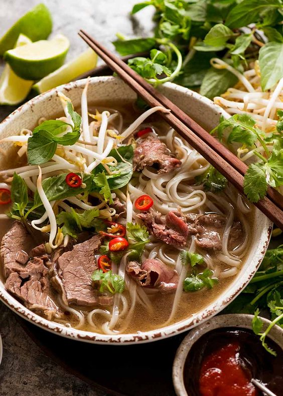
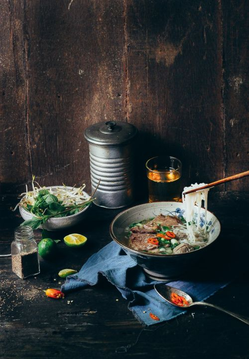

VIETNAMFOOD
VIETNAMFOOD
VIETNAMFOOD
VIETNAMFOOD
3/2/2024 15:27 GMT+7
Ngày xưa, nhân dân ta (dân Bắc và Hà Nội) rất ít ăn thịt bò. Có món ăn rất phổ biến là xáo trâu ăn với bún. Nước xáo trâu chan lên bát bún có bày mấy miếng thị trâu đã xào qua. Đầu thế kỷ XX, ở Hà Nội chỉ có mấy của hàng thịt bò nhưng ế ẩm, không bán hết. Nhất là xương bò chẳng ai mua. Một số hàng xáo trâu liền mua thịt bò ế về thay cho thịt trâu. Lấy xương bò đun lên làm nước xáo. Nhưng thật không ngờ họ thấy thịt bò thơm ngon mà xương bò thì rất ngọt. Thế là bún xáo bò ra đời. Sau đó, người ta thay bún bằng những lát bánh cuốn tráng, thấy càng ngon hơn. Từ đó, món xáo bò này được cải tiến không ngừng. Họ rao bán xáo bò một cách khá khôn ngoan là rao bằng tiếng Quảng Đông cho nó oai và lạ tai là ngầu nhục phấn rồi thành “nhục phấn… phấn ơ”… sau cùng còn lại tiếng phở… Phở là món ăn do người Việt Nam tạo ra.
Phở Hà Nội - một nét đặc sắc trong ẩm thực Hà thành
Phở Hà Nội có từ khi nào? Năm 1930, đã bắt đầu có phở ở Hà Nội. Nhưng mới là phở ban đầu. Những năm 1937-1938 phở đã có mặt ở khắp nơi. Nhưng đến năm 1939 - 1942 mới là thời đại hoàng kim của phở tại Hà Nội. Thật vậy, phở đã đến với tất cả các tầng lớp trong xã hội. Nó đã đạt đến mức ngon nhất, không thể nào ngon hơn được nữa. Nó có mặt suốt xuân, hạ, thu, đông. Người ta săn tìm, kén chọn những gánh phở, xe phở, hiệu phở cây đa Lý Quốc Sư, gánh nhà Thương Mắt, gánh chợ Hôm, gánh Cống Vọng, Hàm Long, Chợ Đuổi… và cũng nổi lên những hào kiệt: phở Hội, phở Hiến, phở Tư Hói, phở Sửu đen, phở Tráng…
Ở Hà Nội, phở là một món ăn đặc biệt của người Hà Nội và được dùng riêng như là một món quà sáng hoặc trưa và tối, không ăn cùng các món ăn khác. Từ giữa những năm 1960 đến trước những năm 1990 của thế kỷ XX, vì nhiều lý do nhất là khâu quản lý hành chính bao cấp về lương thực, thực phẩm, tại Hà Nội và nhiều tỉnh miền Bắc xuất hiện "phở không người lái" (phở không thịt) trong các cửa hàng mậu dịch quốc doanh. Cũng từ thời bao cấp, ở Hà Nội, người ta thường có thói quen cho thêm nhiều mì chính vào nước dùng. Cùng với thời đổi mới từ thập niên 90, phở đã phong phú hơn và người Hà Nội thường ăn phở với những miếng quẩy nhỏ (từ thập kỷ 60 đến giữa thập kỷ 80 nhưng do ở giai đoạn khó khăn nên quẩy bị mất đi khoảng 1995 quẩy đã quay trở lại).

Phở Hà Nội - một nét đặc sắc trong ẩm thực Hà thành
Thành phần chính của phở là bánh phở và nước dùng (hay nước lèo theo cách gọi miền Nam) cùng với thịt bò hoặc gà cắt lát mỏng. Ngoài ra còn kèm theo các gia vị như: tương, tiêu, chanh, nước nắm, ớt,... Những gia vị này được thêm vào tùy theo khẩu vị của từng người dùng. Phở thông thường dùng làm món điểm tâm buổi sáng hoặc ăn đêm, nhưng ở các thành phố lớn món ăn này được thưởng thức trong cả ngày. Để có được những bát phở ngon tùy thuộc rất nhiều vào kinh nghiệm và bí quyết truyền thống của người chế biến, trong đó quan trọng đặc biệt là nồi nước dùng. Nước dùng cho nồi phở thường là nước dùng trong được ninh từ xương bò (nếu người nội trợ không nhiều kinh nghiệm để khử mùi xương bò thì có thể thay bằng xương lợn), sá sùng, kèm nhiều loại gia vị bao gồm quế, hồi, gừng nướng, thảo quả, đinh hương, hạt mùi, hành khô nướng. Thịt dùng cho món phở là thịt bò (với đủ loại thịt bắp, nạm, gầu được làm tái hay chín hẳn) hoặc thịt gà (gà ta già luộc, xé thịt cho thịt ngọt đậm đà). "Bánh phở" theo truyền thống được làm từ bột gạo, tráng thành tấm mỏng rồi cắt thành sợi. Phở luôn được thưởng thức khi còn nóng hổi.
Phở luôn được gia công, cải tiến để thoả mãn cái “gu” thanh lịch của người Tràng An. Người ta nghĩ ra nhiều cách như cho vào nước dùng chất ngọt thực vật của su hào rồi cho thêm tôm he, sá sùng, húng lìu, gừng, xương lợn… Nước dùng được ninh bằng củi trong 12 tiếng đồng hồ với ngọn lửa nhẹ. Mở nắp thùng nước dùng ra là có một làn khói mơ hồ, thơm nức từ đầu phố đến cuối phố. Nó có một mùi vị dễ chịu, không thể nào quên được. Vừa trần gian vừa bay bổng.Trên thế giới nước nào có người Việt Nam là ở đó có phở. Các bạn nước ngoài mỗi khi sang Việt Nam cũng tìm đến với món phở. Phở dường như là một trong những nét tiêu biểu của văn hoá ẩm thực Thăng Long – Hà Nội.

Khi khách hàng cần chúng tôi sẽ có mặt

Hỗ trợ thanh toán online qua Ví điện tử

Thông tin chính xác, kịp thời, đầy đủ
GIỚI THIỆU
QUẢNG CÁO
CHÍNH SÁCH BẢO MẬT
LIÊN HỆ
©2024